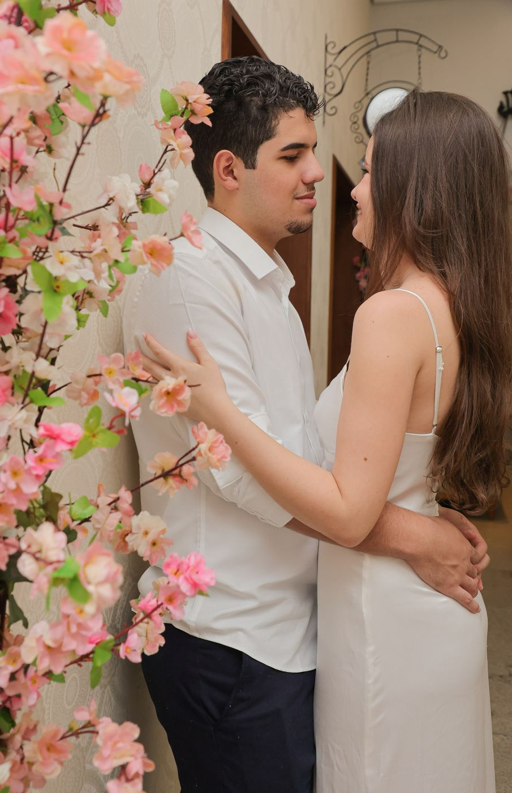
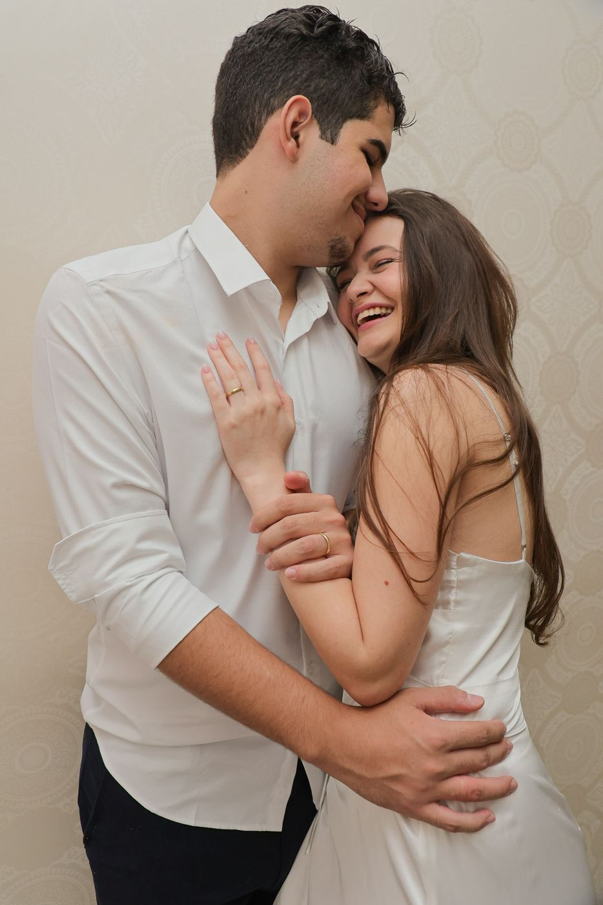

Portfólio
A Martt Co. estrutura o posicionamento e a comunicação de negócios, e produz o conteúdo visual que sustenta essa presença.
Casamento civil · Cartório · Goiânia
Fotos






Vídeos
Toque para assistir com som.
Gostou do trabalho? Fale comigo no WhatsApp.
Crescimento não é sorte. É estrutura.